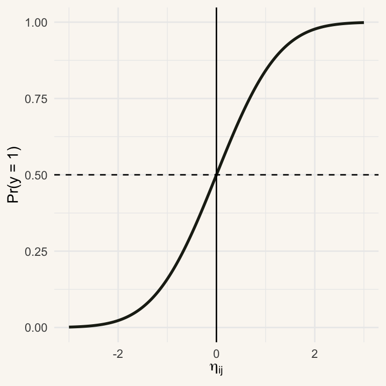
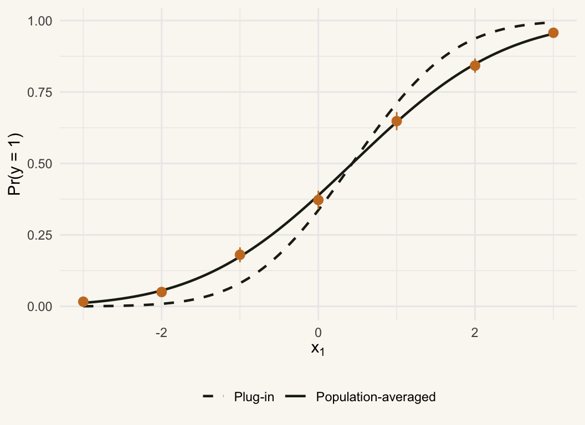
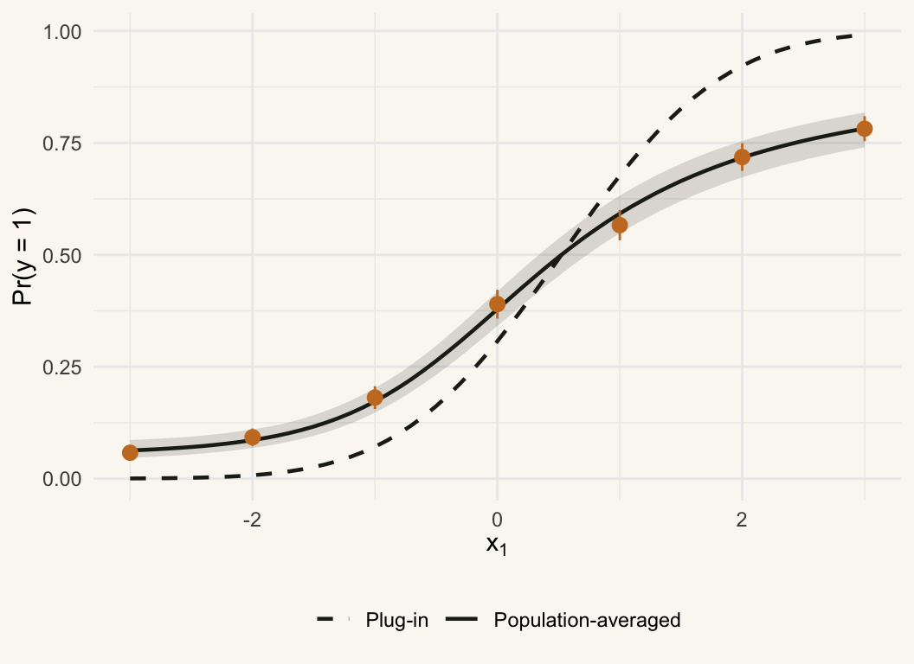
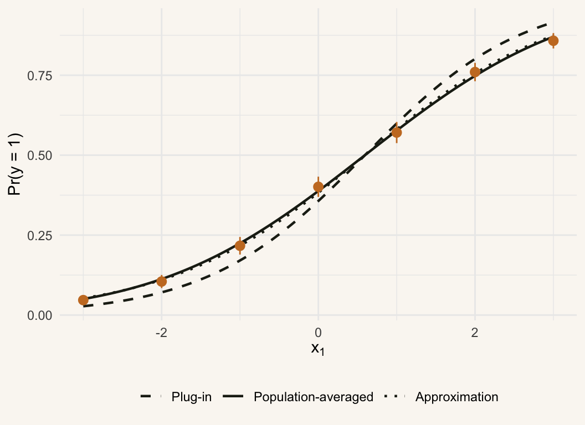

Population-averaged predictions from multilevel probit models
Bayesian
Logit
Probit
Multilevel models
R
Simulation
How do we do a correct population-averaged interpretation of multilevel models with binary dependent variables? This blog post answers that question. It shows the bias when things go wrong. It also shows how one can obtain the correct population-averaged predicted probabilities analytically, and through simulation,
Population-Averaging
In multilevel analysis, we often interpret the results through population-averaging. Population averaging removes all of the disturbances from the model by averaging them out. In a linear model this is straightforward. Consider, for instance, the random intercept model for level-1 units \(i\) nested in level-2 units \(j\) (e.g., individuals in countries): \[ y_{ij} = \underbrace{\gamma_{00} + \sum_{k=1}^K \gamma_{k0} x_{ijk}}_{\eta_{ij} = \text{Linear Predictor}} + \delta_{0j} + \varepsilon_{ij} \] The standard assumption in the random intercept model is that the level-2 disturbances, \(\delta_{0j}\), have an expectation of 0 and that the same is true of the level-1 disturbances, \(\varepsilon_{ij}\). Hence, averaging across both units, we obtain \(\mathbb{E}[y_{ij}] = \eta_{ij}\).
Averaging Gone Wrong
Population-averaging can also be applied to multilevel models for binary dependent variables. An example is the multilevel probit model with a random intercept. Let the binary variable \(y_{ij}\) equal 1 if the latent variable \(y_{ij}^*\) is greater than or equal to 0, and 0 otherwise. For the latent variable, we assume \[ y_{ij}^* = \eta_{ij} + \delta_{0j} + \varepsilon_{ij} \]
with \(\varepsilon_{ij} \sim \text{normal}(0,1)\), \(\delta_{0j} \sim \text{normal}(0, \tau_{00})\), and \(\tau_{00} = \text{Var}[\delta_{0j}]\). Consequently,
\[ \begin{align} \Pr (y_{ij} = 1 \mid \delta_{0j}) &= \Pr (\eta_{ij} + \delta_{0j} + \varepsilon_{ij} \geq 0 \mid \delta_{0j}) \nonumber \\ &= \Pr(-\varepsilon_{ij} \leq \eta_{ij} + \delta_{0j}) \nonumber \\ &= \Phi(\eta_{ij} + \delta_{0j}) \nonumber \end{align} \]
where \(\Phi(.)\) is the cumulative standard normal distribution function. Figure 1 shows the probability curve for \(\eta_{ij} = \gamma_{00} + \gamma_{10} x_{ij}\). The curve is concave for \(\Pr(y_{ij} = 1) > 0.5\) and convex for \(\Pr(y_{ij} = 1) < 0.5\). This becomes important for our discussion later.
When we population-average the predicted probability, I continue to see a common mistake: users compute \(\Phi(\mathbb{E}[\eta_{ij} + \delta_{0j}])\). In that approach, the fact that \(\mathbb{E}[\eta_{ij} + \delta_{0j}] = \eta_{ij} + \mathbb{E}[\delta_{0j}]\) and the assumption that the level-2 errors have an expectation of 0, results in a proposed population-averaged predicted probability of \(\Phi(\eta_{ij})\). That is false! In this blog, I show why it is false and how population-averaging is done right.
The Bias
The quantity of interest is not \(\Phi(\mathbb{E}[\eta_{ij} + \delta_{0j}])\) but \(\mathbb{E}[\Phi (\eta_{ij} + \delta_{0j})]\). This something quite different, because \(\Phi\) is a nonlinear function. The curvature in Figure 1 gives the intuition. To the right of 0, \(\Phi\) is concave, so averaging over the spread in \(\delta_{0j}\) pulls the expected probability below \(\Phi(\eta_{ij})\). To the left of 0, \(\Phi\) is convex, and the expected probability is pulled above \(\Phi(\eta_{ij})\). Only at 0 do the two coincide.
This is only an intuition, however. Jensen’s inequality proper requires the function to be concave (or convex) over the entire support of the random variable. Because \(\delta_{0j}\) is normal, \(\eta_{ij} + \delta_{0j}\) ranges over the whole real line, and so spreads mass over both the concave and the convex part of the curve. The net effect therefore requires an exact calculation, which we turn to now. Plugging in \(\mathbb{E}[\delta_{0j}] = 0\) either over- or under-estimates the probability, depending on the sign of the linear predictor.
Let us assess the bias for a very simple model where \(\eta_{ij} = \gamma_{00}\); analogous to a random effects ANOVA, we have a constant only. If we plug in a value of zero for \(\delta_{0j}\), corresponding to its expectation, we obtain
\[ P_{\text{plug-in}} = \Phi(\gamma_{00}) \]
The actual population-averaged estimator is
\[ P_{\text{pop-avg}} = \int_{-\infty}^{\infty} \left[ \int_{-\infty}^{\infty} \mathbb{1}(\gamma_{00} + \delta_{0j} + \varepsilon_{ij} \geq 0) \phi(\varepsilon_{ij}) d\varepsilon_{ij} \right] \frac{1}{\sqrt{\tau_{00}}} \phi \left( \frac{\delta_{0j}}{\sqrt{\tau_{00}}} \right) d\delta_{0j} \]
Since \(\delta_{0j}\) and \(\varepsilon_{ij}\) are assumed to be statistically independent and are both normal, their sum is normal with mean 0 and variance \(1+\tau_{00}\). The double integral is therefore simply \(\Pr(\delta_{0j}+\varepsilon_{ij} \geq -\gamma_{00})\), so that
\[ P_{\text{pop-avg}} = \Phi\left(\frac{\gamma_{00}}{\sqrt{1+\tau_{00}}}\right). \]
The bias from plugging in \(\delta_{0j}=0\) is thus
\[ P_{\text{plug-in}} - P_{\text{pop-avg}} = \Phi(\gamma_{00}) - \Phi\left(\frac{\gamma_{00}}{\sqrt{1+\tau_{00}}}\right). \]
Dividing by \(\sqrt{1+\tau_{00}} > 1\) pulls the argument toward 0, so the plug-in probability is too extreme: too high when \(\gamma_{00}>0\), too low when \(\gamma_{00}<0\), and correct only when \(\gamma_{00}=0\). For \(\gamma_{00}=1\) and \(\tau_{00}=1\), for instance, the plug-in is \(\Phi(1) \approx 0.841\), whereas the population-averaged probability is \(\Phi(0.707) \approx 0.760\).
See the Bias
The sliders in Figure 2 set the level-2 variance \(\tau_{00}\) and the constant \(\gamma_{00}\). The dashed curve is the plug-in probability \(\Phi(\gamma_{00})\), the solid curve is the population-averaged probability \(\Phi(\gamma_{00}/\sqrt{1+\tau_{00}})\), and the shaded area between them is the bias. At \(\tau_{00}=0\) the two curves coincide. As \(\tau_{00}\) grows, the population-averaged curve flattens toward 0.5.
A Simulation
A constant-only model is a stylized case, so let us check the result in a more realistic setting with two predictors, \(x_{1ij}\) (the predictor of interest) and a binary \(x_{2ij}\). The data-generating process is
\[ y_{ij}^* = \gamma_{00} + \gamma_{10} x_{1ij} + \gamma_{20} x_{2ij} + \delta_{0j} + \varepsilon_{ij}, \]
with \(\gamma_{00}=-0.5\), \(\gamma_{10}=1\), \(\gamma_{20}=0.8\), and \(\tau_{00}=1.5\). There are 300 level-2 units with 40 level-1 units each. We hold \(x_2\) constant at 0 and plot the probability as a function of \(x_1\). The dashed curve plugs in \(\delta_{0j}=0\). The solid curve is the population-averaged probability, computed with the closed form from the previous section, using the estimated coefficients and variance. The points are the observed shares of ones at each value of \(x_1\) among units with \(x_2=0\), which require no model at all.
Setup: parameters, data generation, plotting
library(tidyverse)
library(lme4)
g00 <- -0.5; g10 <- 1; g20 <- 0.8; tau00 <- 1.5
J <- 300; n <- 40; N <- J * n
simulate_data <- function(link) {
d <- tibble(
j = rep(1:J, each = n),
x1 = sample(-3:3, N, replace = TRUE),
x2 = rbinom(N, 1, 0.5)
)
delta <- rnorm(J, 0, sqrt(tau00))
e <- if (link == "probit") rnorm(N) else rlogis(N)
d$y <- as.integer(g00 + g10 * d$x1 + g20 * d$x2 + delta[d$j] + e >= 0)
d
}
# Observed share of ones by x1 among units with x2 = 0
observed <- function(d) {
d |>
filter(x2 == 0) |>
group_by(x1) |>
summarise(p = mean(y), se = sqrt(p * (1 - p) / n()), .groups = "drop")
}
plot_sim <- function(curves, emp) {
long <- curves |>
pivot_longer(-x1, names_to = "type", values_to = "p") |>
mutate(type = factor(type, levels = c("plug_in", "pop_avg", "approx"),
labels = c("Plug-in", "Population-averaged",
"Approximation")))
ggplot() +
geom_line(data = long, aes(x1, p, linetype = type),
colour = "#1f2318", linewidth = 0.8) +
geom_pointrange(data = emp,
aes(x1, p, ymin = p - 1.96 * se, ymax = p + 1.96 * se),
colour = "#c97b2a") +
scale_linetype_manual(values = c("Plug-in" = "dashed",
"Population-averaged" = "solid",
"Approximation" = "dotted")) +
labs(x = expression(x[1]), y = "Pr(y = 1)", linetype = NULL) +
theme_minimal() +
theme(
legend.position = "bottom",
plot.background = element_rect(fill = "#faf7f2", colour = NA),
panel.background = element_rect(fill = "#faf7f2", colour = NA)
)
}Show code
set.seed(2026)
d <- simulate_data("probit")
fit <- glmer(y ~ x1 + x2 + (1 | j), data = d,
family = binomial(link = "probit"), nAGQ = 10)
b <- fixef(fit)
tau_hat <- as.numeric(VarCorr(fit)$j)
curves <- tibble(x1 = seq(-3, 3, 0.05)) |>
mutate(eta = b["(Intercept)"] + b["x1"] * x1, # x2 held at 0
plug_in = pnorm(eta),
pop_avg = pnorm(eta / sqrt(1 + tau_hat))) |>
select(-eta)
plot_sim(curves, observed(d))
The points in Figure 3 follow the solid curve and depart from the dashed one. The plug-in curve is too steep: it is too low for small values of \(x_1\) and too high for large values, and the two curves cross where the probability is close to 0.5. This is the same pattern as in the constant-only case, now with a covariate, and it is not an artifact of estimation: the solid curve is computed from the fitted model and the points are not.
A Random Slope
The next step is to let the effect of \(x_1\) vary across level-2 units:
\[ y_{ij}^* = \gamma_{00} + \gamma_{10} x_{1ij} + \gamma_{20} x_{2ij} + \delta_{0j} + \delta_{1j} x_{1ij} + \varepsilon_{ij}, \]
with \((\delta_{0j}, \delta_{1j})\) bivariate normal with variances \(\tau_{00}\) and \(\tau_{11}\) and covariance \(\tau_{01}\). The closed form survives. Conditional on \(x_1\), the composite error \(\delta_{0j} + \delta_{1j}x_1 + \varepsilon_{ij}\) is still normal with mean 0, and its variance is \(1 + \tau_{00} + 2\tau_{01}x_1 + \tau_{11}x_1^2\). Hence
\[ P_{\text{pop-avg}}(x_1) = \Phi\left(\frac{\eta}{\sqrt{1+\tau_{00}+2\tau_{01}x_1+\tau_{11}x_1^2}}\right). \]
The attenuation now depends on \(x_1\). The variance in the denominator is a quadratic in \(x_1\) with its minimum at \(x_1=-\tau_{01}/\tau_{11}\), so it grows as \(x_1\) moves away from that point, and the population-averaged curve flattens more in the tails than in the random-intercept case. The plug-in curve ignores all of this.
The data below are generated with \(\tau_{11}=0.5\) and \(\tau_{01}=0.3\). Here I estimate the model in a Bayesian setup with brms. The population-averaged probability is computed separately for each posterior draw and then summarized, so the band reflects uncertainty in the coefficients and in the variance components. Plugging posterior means into the formula would be a Bayesian version of the same mistake as before, because the curve is nonlinear in the parameters.
Show code
library(brms)
tau11 <- 0.5; tau01 <- 0.3
Sigma <- matrix(c(tau00, tau01, tau01, tau11), 2)
set.seed(2028)
u <- MASS::mvrnorm(J, c(0, 0), Sigma)
d <- tibble(j = rep(1:J, each = n),
x1 = sample(-3:3, N, replace = TRUE),
x2 = rbinom(N, 1, 0.5)) |>
mutate(y = as.integer(g00 + g10 * x1 + g20 * x2 +
u[j, 1] + u[j, 2] * x1 + rnorm(N) >= 0))
fit_rs <- brm(y ~ x1 + x2 + (1 + x1 | j), data = d,
family = bernoulli(link = "probit"),
prior = c(prior(normal(0, 2), class = b),
prior(normal(0, 2), class = Intercept),
prior(exponential(1), class = sd),
prior(lkj(2), class = cor)),
chains = 4, cores = 4, iter = 2500, seed = 2028, refresh = 0)
dr <- as_draws_df(fit_rs)
t00 <- dr$sd_j__Intercept^2
t11 <- dr$sd_j__x1^2
t01 <- dr$cor_j__Intercept__x1 * dr$sd_j__Intercept * dr$sd_j__x1
curves <- map_dfr(seq(-3, 3, 0.1), \(x) {
eta <- dr$b_Intercept + dr$b_x1 * x # x2 held at 0
pa <- pnorm(eta / sqrt(1 + t00 + 2 * t01 * x + t11 * x^2))
tibble(x1 = x, plug_in = median(pnorm(eta)), pop_avg = median(pa),
lo = quantile(pa, 0.025), hi = quantile(pa, 0.975))
})
emp <- d |>
filter(x2 == 0) |>
group_by(x1) |>
summarise(p = mean(y), se = sqrt(p * (1 - p) / n()), .groups = "drop")
ggplot() +
geom_ribbon(data = curves, aes(x1, ymin = lo, ymax = hi),
fill = "#1f2318", alpha = 0.15) +
geom_line(data = curves, aes(x1, plug_in, linetype = "Plug-in"),
colour = "#1f2318", linewidth = 0.8) +
geom_line(data = curves, aes(x1, pop_avg, linetype = "Population-averaged"),
colour = "#1f2318", linewidth = 0.8) +
geom_pointrange(data = emp,
aes(x1, p, ymin = p - 1.96 * se, ymax = p + 1.96 * se),
colour = "#c97b2a") +
scale_linetype_manual(values = c("Plug-in" = "dashed",
"Population-averaged" = "solid")) +
labs(x = expression(x[1]), y = "Pr(y = 1)", linetype = NULL) +
theme_minimal() +
theme(
legend.position = "bottom",
plot.background = element_rect(fill = "#faf7f2", colour = NA),
panel.background = element_rect(fill = "#faf7f2", colour = NA)
)
The bias (see Figure 4) is now much larger than in the random-intercept model, and it is not confined to the extremes: at \(x_1=2\) the plug-in probability is about 0.92, whereas the population-averaged probability is about 0.72. The observed shares of ones follow the population-averaged curve throughout.
Extensions
The closed form above rests on two features of the probit model: the level-1 error is normal, and so is the random intercept, so their sum is normal as well. Change either and the integral loses its closed form. The most common case is the multilevel logit model. In the random intercept logit model, for instance, the population-averaged probability is \(\int \text{logit}^{-1}(\gamma_{00} + \delta_{0j}) \, f(\delta_{0j}) \, d\delta_{0j}\), which has no analytical solution. The bias is the same in kind (the plug-in probability is too extreme), but now it has to be computed numerically. A rough approximation is available because the logistic curve is close to a rescaled probit curve, which gives \(\text{logit}^{-1}\left(\gamma_{00}/\sqrt{1+0.346\,\tau_{00}}\right)\), but this is an approximation, not an identity.
We repeat the analysis from Figure 3, now using the logit link. The solid curve from Figure 3 can no longer be written in closed form, so we integrate over the random intercept numerically, using the estimated coefficients and variance. The dotted curve is the rescaled-probit approximation from above.
Show code
set.seed(2027)
d <- simulate_data("logit")
fit <- glmer(y ~ x1 + x2 + (1 | j), data = d,
family = binomial(link = "logit"), nAGQ = 10)
b <- fixef(fit)
tau_hat <- as.numeric(VarCorr(fit)$j)
# No closed form: integrate the inverse logit over the random intercept
pop_avg_logit <- function(eta, tau) {
sapply(eta, function(e)
integrate(function(delta) plogis(e + delta) * dnorm(delta, 0, sqrt(tau)),
-Inf, Inf)$value)
}
curves <- tibble(x1 = seq(-3, 3, 0.05)) |>
mutate(eta = b["(Intercept)"] + b["x1"] * x1, # x2 held at 0
plug_in = plogis(eta),
pop_avg = pop_avg_logit(eta, tau_hat),
approx = plogis(eta / sqrt(1 + 0.346 * tau_hat))) |>
select(-eta)
plot_sim(curves, observed(d))
The picture in Figure 5 is qualitatively the same as in the probit case: the plug-in curve is too extreme relative to the population-averaged curve. The dotted approximation is hard to tell apart from the solid curve, but note that only the numerical integral is exact.
The brmsmargins package does the numerical integration for models fit with brms. It computes marginal predictions, average marginal effects, and population-averaged (“marginal”) coefficients, integrating the random effects out of each posterior draw by simulation. It therefore works for any link function, for random slopes, and for models with several random effects. The sketch below is kept simple; see the package vignette on mixed effects models for the full set of arguments.
Show code
library(brms)
library(brmsmargins)
fit <- brm(y ~ x1 + x2 + (1 + x1 | j), data = d,
family = bernoulli(link = "logit"))
# Average predicted probability over x1, integrating out the random effects
brmsmargins(fit,
at = data.frame(x1 = seq(-3, 3, 0.5), x2 = 0),
effects = "integrateoutRE", k = 100, seed = 1234)For the probit model with normal random effects, I would still use the closed form: it is exact, instantaneous, and shows where the bias comes from. Use brmsmargins when the closed form is not available, or when you want average marginal effects rather than predicted probabilities.